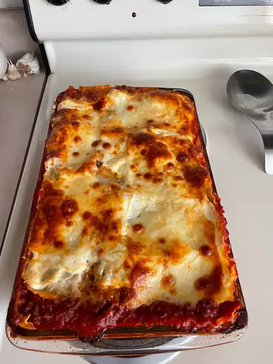

Lasagna

How to make lasagna
Making lasagna can be time-consuming, but the results are well worth the wait. You'll find a detailed ingredient list and step-by-step instructions in the recipe below, but let's go over the basics:
Lasagna ingredients
- Meat
- Onion
- Garlic
- Tomato products
- Spices and seasoning
- Cheese
- Egg
- Lasagna noodles
How to make lasagne step by step
- Make the meat sauce
- Cook the noodle
- Make the ricotta mixture
- Layer the lasagna according to the recipe instructions
- Cover with foil and bake
- Let the lasagna rest before serving